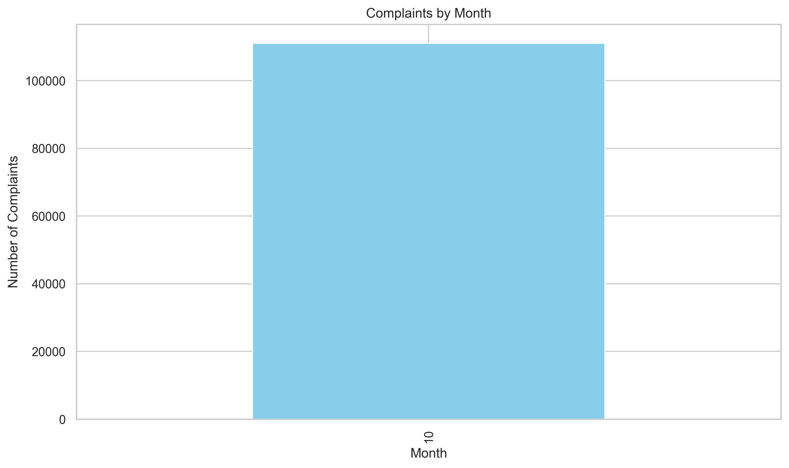
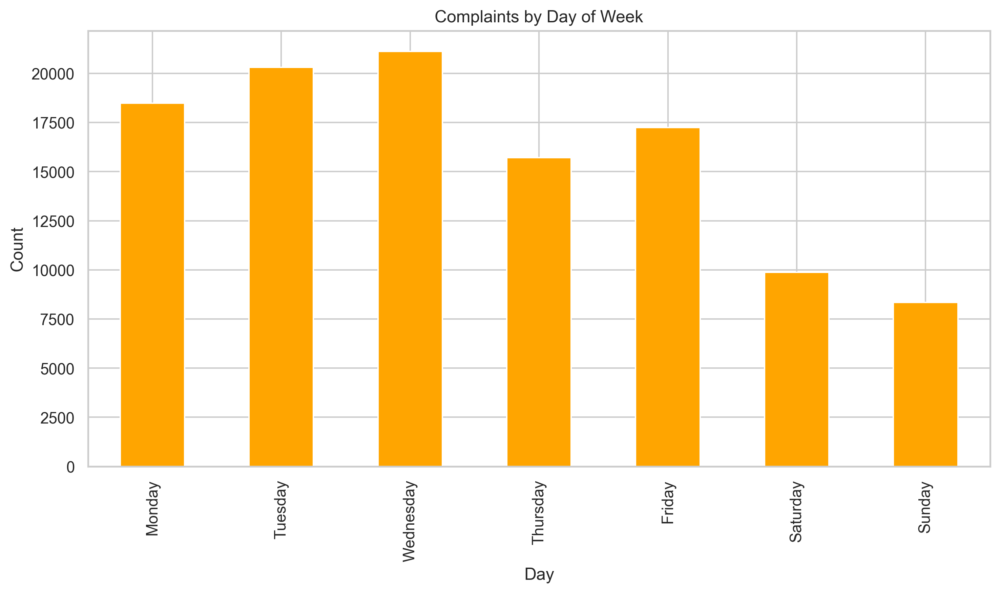
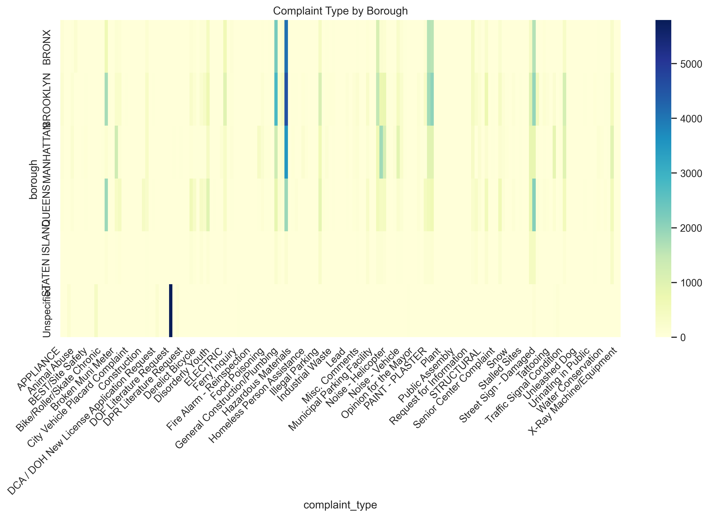

NYC 311 Service Requests Analysis
A portfolio data analysis project by Siavash — NYC complaint patterns, agency response, and resolution behavior
Dataset Overview
This project analyzes NYC 311 service request data covering complaints across all five boroughs of New York City. The raw dataset contains 111,069 rows and 14 columns.
In [1]
import pandas as pd
import numpy as np
import matplotlib.pyplot as plt
import seaborn as sns
df = pd.read_csv("data/311-service-requests.csv")
print(f"Dataset shape: {df.shape}")
print(f"\nColumn names and types:")
print(df.dtypes)
Out [1]
Dataset shape: (111069, 14) Column names and types: Unnamed: 0 int64 Created Date object Closed Date object Agency object Agency Name object Complaint Type object Descriptor object Location Type object Incident Zip object Address Type object City object Landmark object Status object Borough object
Data Audit
Before analyzing, we audited the dataset for missing values, duplicate records, and invalid date ranges.
Missing values
In [2]
missing = df.isnull().sum()
missing_pct = (missing / len(df)) * 100
missing_df = pd.DataFrame({
'Missing Count': missing,
'Percentage': missing_pct
}).sort_values('Missing Count', ascending=False)
print(missing_df)
Out [2]
Missing Count Percentage Landmark 110974 99.914468 Closed Date 50799 45.736434 Location Type 32047 28.853235 Incident Zip 12262 11.039984 City 12215 10.997668 Address Type 8822 7.942810 Descriptor 456 0.410556 Complaint Type 0 0.000000 Agency 0 0.000000 Created Date 0 0.000000 Agency Name 0 0.000000 Status 0 0.000000 Borough 0 0.000000
Duplicate rows
In [3]
print(f"Total duplicate rows: {df.duplicated().sum()}")
key_cols = ['created_date', 'complaint_type', 'agency', 'borough']
print(f"Rows with duplicate key info: {df.duplicated(subset=key_cols).sum()}")
print(f"\nDataset shape before cleaning: {df.shape}")
Out [3]
Total duplicate rows: 0 Rows with duplicate key info: 46606 Dataset shape before cleaning: (111069, 14)
Date parsing and validation
In [4]
df.columns = df.columns.str.strip().str.lower().str.replace(' ', '_')
df['created_date'] = pd.to_datetime(df['created_date'], errors='coerce')
df['closed_date'] = pd.to_datetime(df['closed_date'], errors='coerce')
print(f"created_date nulls: {df['created_date'].isnull().sum()}")
print(f"closed_date nulls: {df['closed_date'].isnull().sum()}")
print(f"\ncreated_date range: {df['created_date'].min()} to {df['created_date'].max()}")
print(f"closed_date range: {df['closed_date'].min()} to {df['closed_date'].max()}")
print(f"\nRows where closed_date < created_date: {(df['closed_date'] < df['created_date']).sum()}")
Out [4]
created_date nulls: 0 closed_date nulls: 50799 created_date range: 2013-10-04 00:00:10 to 2013-10-31 02:08:41 closed_date range: 1900-01-01 00:00:00 to 2013-10-31 03:00:20 Rows where closed_date < created_date: 2047 (1.84%)
Resolution time
In [5]
df['resolution_days'] = (df['closed_date'] - df['created_date']).dt.days
print(df['resolution_days'].describe())
print(f"\nNegative resolution times: {(df['resolution_days'] < 0).sum()} ({(df['resolution_days'] < 0).mean()*100:.2f}%)")
print(f"Open complaints: {df['closed_date'].isna().sum()} ({df['closed_date'].isna().mean()*100:.2f}%)")
print(f"Closed complaints: {df['closed_date'].notna().sum()} ({df['closed_date'].notna().mean()*100:.2f}%)")
Out [5]
count 60270.000000 mean -1.134478 std 293.242808 min -41560.000000 25% 0.000000 50% 0.000000 75% 2.000000 max 26.000000 Negative resolution times: 2047 (1.84%) Open complaints: 50799 (45.74%) Closed complaints: 60270 (54.26%)
Data Cleaning
In [6]
df = df.drop('landmark', axis=1)
df['has_bad_date'] = df['resolution_days'] < 0
df['is_open'] = df['closed_date'].isnull().astype(int)
df.loc[df['has_bad_date'], 'closed_date'] = pd.NaT
print(f"After dropping landmark: {len(df.columns)} columns")
print(f"Rows with bad dates flagged: {df['has_bad_date'].sum()}")
print(f"Open complaints flagged: {df['is_open'].sum()}")
print(f"\nFinal shape: {df.shape}")
Out [6]
After dropping landmark: 14 columns Rows with bad dates flagged: 2047 Open complaints flagged: 50799 Final shape: (111069, 16)
Feature Engineering
In [7]
df['created_month'] = df['created_date'].dt.month
df['created_day_of_week'] = df['created_date'].dt.day_name()
df['created_hour'] = df['created_date'].dt.hour
df['is_weekend'] = df['created_day_of_week'].isin(['Saturday', 'Sunday']).astype(int)
print(df[['created_month', 'created_day_of_week', 'created_hour', 'is_weekend']].head(10))
print(f"\nMonths: {df['created_month'].nunique()}")
print(f"Days of week: {df['created_day_of_week'].nunique()}")
print(f"Hours: {df['created_hour'].nunique()}")
Out [7]
created_month created_day_of_week created_hour is_weekend 0 10 Thursday 2 0 1 10 Thursday 2 0 2 10 Thursday 2 0 3 10 Thursday 1 0 4 10 Thursday 1 0 5 10 Thursday 1 0 6 10 Thursday 1 0 7 10 Thursday 1 0 8 10 Thursday 1 0 9 10 Thursday 1 0 Months: 1 Days of week: 7 Hours: 24
Exploratory Data Analysis
Top 10 complaint types
In [8]
top_complaints = df['complaint_type'].value_counts().head(10)
plt.figure(figsize=(10, 6))
top_complaints.plot(kind='bar')
plt.title('Top 10 Complaint Types')
plt.xlabel('Complaint Type')
plt.ylabel('Count')
plt.xticks(rotation=45, ha='right')
plt.tight_layout()
plt.savefig("visuals/top_complaints.png", dpi=300, bbox_inches="tight")
plt.show()

Figure 1 — Top 10 complaint types by volume
A small number of complaint categories dominate the total volume.
Complaints by borough
In [9]
borough_counts = df['borough'].value_counts()
plt.figure(figsize=(10, 6))
borough_counts.plot(kind='bar', color='teal')
plt.title('Complaint Count by Borough')
plt.xlabel('Borough')
plt.ylabel('Count')
plt.xticks(rotation=45, ha='right')
plt.tight_layout()
plt.savefig("visuals/borough_complaints.png", dpi=300, bbox_inches="tight")
plt.show()

Figure 2 — Complaint count by borough
Borough-level demand is highly concentrated across the five NYC boroughs.
Agency workload
In [10]
agency_counts = df['agency'].value_counts().head(10)
plt.figure(figsize=(10, 6))
agency_counts.plot(kind='bar', color='dodgerblue')
plt.title('Top Agencies by Complaint Volume')
plt.xlabel('Agency')
plt.ylabel('Count')
plt.xticks(rotation=45, ha='right')
plt.tight_layout()
plt.savefig("visuals/agency_complaints.png", dpi=300, bbox_inches="tight")
plt.show()

Figure 3 — Top agencies by complaint volume
A few departments handle the majority of all complaints in the city.
Open vs Closed complaints
In [11]
open_closed = pd.Series({
'Open': df['closed_date'].isna().sum(),
'Closed': df['closed_date'].notna().sum()
})
plt.figure(figsize=(8, 6))
open_closed.plot(kind='bar', color=['#f39c12', '#2ecc71'])
plt.title('Open vs Closed Complaints')
plt.xlabel('Status')
plt.ylabel('Count')
plt.tight_layout()
plt.savefig("visuals/open_vs_closed.png", dpi=300, bbox_inches="tight")
plt.show()

Figure 4 — Open and closed complaint comparison
45.74% of complaints remain open with no closed date recorded.
Resolution time distribution
In [12]
df[df['resolution_days'].notna()]['resolution_days'].plot(kind='hist', bins=30, color='purple')
plt.figure(figsize=(10, 6))
df[df['resolution_days'].notna()]['resolution_days'].plot(kind='hist', bins=30, color='purple')
plt.title('Resolution Time Distribution')
plt.xlabel('Resolution Days')
plt.ylabel('Frequency')
plt.tight_layout()
plt.savefig("visuals/resolution_time_distribution.png", dpi=300, bbox_inches="tight")
plt.show()

Figure 5 — Distribution of resolution time in days
Median resolution is 0 days. 75th percentile is 2 days. A small subset takes much longer.
Complaints by month
In [13]
monthly_counts = df['created_month'].value_counts().sort_index()
plt.figure(figsize=(10, 6))
monthly_counts.plot(kind='bar', color='skyblue')
plt.title('Complaints by Month')
plt.xlabel('Month')
plt.ylabel('Number of Complaints')
plt.tight_layout()
plt.savefig("visuals/complaints_by_month.png", dpi=300, bbox_inches="tight")
plt.show()

Figure 6 — Complaint volume by month
Complaints by day of week
In [14]
day_order = ['Monday','Tuesday','Wednesday','Thursday','Friday','Saturday','Sunday']
day_counts = df['created_day_of_week'].value_counts().reindex(day_order, fill_value=0)
plt.figure(figsize=(10, 6))
day_counts.plot(kind='bar', color='orange')
plt.title('Complaints by Day of Week')
plt.xlabel('Day')
plt.ylabel('Count')
plt.tight_layout()
plt.savefig("visuals/complaints_by_day.png", dpi=300, bbox_inches="tight")
plt.show()

Figure 7 — Complaint volume by day of week
Complaint heatmap by borough
In [15]
pivot = pd.crosstab(df['borough'], df['complaint_type']).head(10)
plt.figure(figsize=(12, 8))
sns.heatmap(pivot, cmap='YlGnBu')
plt.title('Complaint Type by Borough')
plt.xticks(rotation=45, ha='right')
plt.tight_layout()
plt.savefig("visuals/borough_complaint_heatmap.png", dpi=300, bbox_inches="tight")
plt.show()

Figure 8 — Complaint type concentration by borough
Key Findings
- A small number of complaint types dominate total volume
- Agency workload is unevenly distributed across city departments
- Borough-level demand is highly concentrated
- Most complaints are resolved in 0–2 days but a subset takes much longer
- 45.74% of complaints remain open with no closed date
Recommendations
- Prioritize resources toward recurring high-volume complaint types
- Address uneven agency workload distribution
- Focus on boroughs with concentrated service pressure
- Investigate complaint categories with slower resolution times